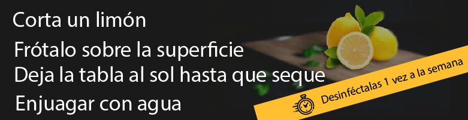

Tips de cocina
Prueba la comida antes de agregar sal
Solo una cucharadita de sal de mesa tiene aproximadamente 2,300; para reducir el consumo de sodio, ármate de valor y retira el salero de tu mesa busca otros condimentos que realcen el sabor como un chorrito de limón o jugo de limón amarillo en las verduras.
No cocines bajo estrés
Además de manejar aspectos técnicos y conocer trucos, es importante que sepas controlar las emociones en la cocina si quieres hacer platos parecidos a los de un chef profesional. Cocinar bajo estrés o desanimado, generalmente no trae buenos resultados. Cuando te dispongas a preparar un plato, tienes que dejar a un lado todo lo que te afecte.

Copyright © 2021 Hazdapa.